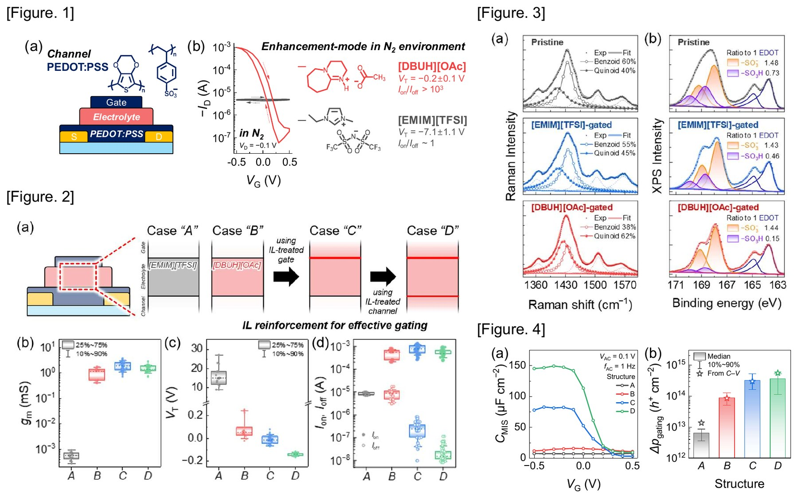
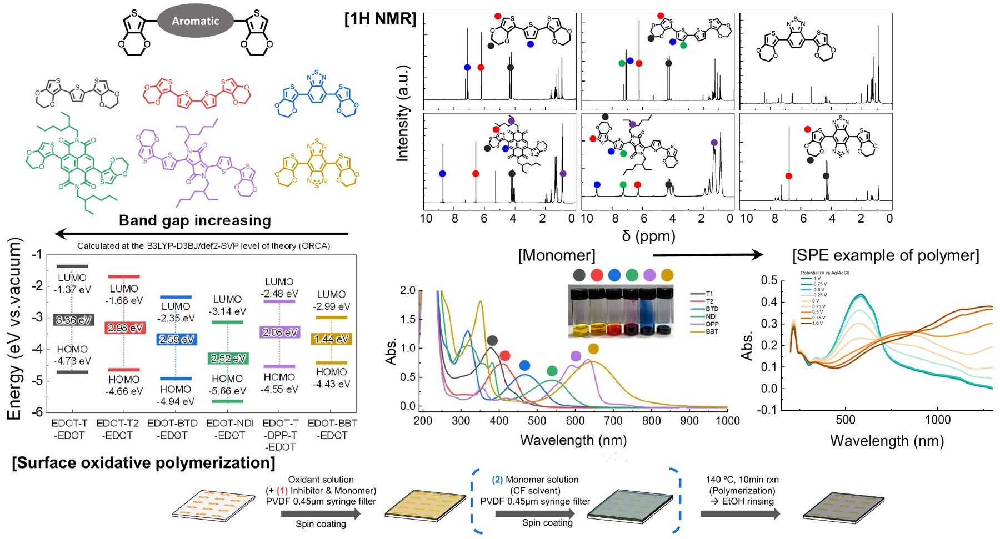

ResearchMy research connects two questions. How does the electrolyte around a conjugated polymer control the way it behaves in a device? And how does the chemical structure of the polymer set its electronic properties? Organic mixed ionic–electronic conductors (OMIECs) carry both ions and electrons, and in organic electrochemical transistors (OECTs), the exchange of ions between the electrolyte and the polymer channel decides when the device turns on and off. I approach these materials from two sides. On the device side, I design the electrolyte. By tuning the ionicity of acid–base ionic liquids, I change how much neutral base they contain, which controls the doping level of the channel and thus the voltage at which a transistor turns on. On the materials side, I build conjugated polymers from the monomer up and use acceptor engineering to set their energy levels before polymerization. Together, these two approaches let me connect molecular design to how a device works. Tuning OECT switching through the molecular design of the electrolyte This project began with an unexpected result. While synthesizing and testing new ionic liquids as solid electrolytes for PEDOT:PSS OECTs, I found that some of them shifted the operating range of the transistor. One of them, the protic ionic liquid [DBUH][OAc], even made the transistor work in enhancement mode, staying off until a gate voltage was applied, while the common [EMIM][TFSI] did not. Raman, XPS, DFT, and capacitance–voltage analyses showed that [DBUH][OAc] interacts strongly with the ion-conducting PSS phase of PEDOT:PSS, so that the channel behaves like a semiconductor rather than a highly doped conductor. Treating both the gate and the channel with the ionic liquid strengthened this effect further and raised the transconductance and on/off ratio (Figure 1). This work is co-first-authored and submitted to ACS Nano. In my master's research, I turned this observation into a systematic study. In a DBU-based acid–base ionic liquid (ABIL), how much of the acid and base turn into ions, its ionicity, depends on the pKa of the acid, and this decides how much neutral base remains. I synthesized a series of ABILs from DBU and carboxylic acids of different pKa, quantified their ionicity by ¹H NMR and DFT, and found that changing only the anion shifted the threshold voltage of PEDOT:PSS OECTs by up to 500 mV. Because a Raman shift alone could not prove de-doping, I combined UV-Vis-NIR, Raman, XPS, GIWAXS, cyclic voltammetry, and EIS-based capacitance–voltage analysis. Together, they pointed to one mechanism. Neutral DBU reduces PEDOT through single-electron transfer, which lowers the hole density and shifts the threshold voltage (Figure 2). I then used this effect to build zero-VGS-load OECT inverters whose switching threshold follows the ABIL composition. This work will be submitted as my second co-first-author manuscript. Tuning the energy levels of conjugated polymers at the monomer stage My device work made me want to tune the material itself, starting from its chemical structure. I focused on the energy levels of conjugated polymers, which decide how easily they gain or lose electrons and therefore how they behave in a device. To set these levels at the monomer stage, I designed a series of donor–acceptor–donor (D-A-D) monomers with EDOT at both ends and changed only the central unit. Thiophene and bithiophene, which have almost no electron-accepting ability, served as references, and BT, NDI, DPP, and BBT served as acceptors of increasing strength. I made the monomers by Stille coupling. Removing the tin by-products was the hardest step, and I solved it by combining several purification methods, including KF washing and column chromatography. Because the α-positions of EDOT are easily oxidized, each monomer can be polymerized by the same oxidative chemistry used to make PEDOT, which carries the chosen acceptor directly into the polymer backbone. I first screened the series by PSS-templated polymerization in water and then moved to surface oxidative polymerization with iron(III) tosylate. Adding a base slowed the oxidant so that uniform films could form during spin-coating. UV-Vis-NIR spectroscopy, cyclic voltammetry, and DFT calculations (ORCA) confirmed that the choice of acceptor systematically tunes the energy levels of the monomers (Figure 3). I am now studying the resulting polymers and how they perform in transistors. Other projectsIon storage electrodes for electrochromic displays — a joint project with Prof. Inho Song's group on transparent capacitive ion storage electrodes, where I helped with the spectroscopic analysis and cyclic voltammetry measurements (co-author, ACS Appl. Mater. Interfaces 2026). Long-term memory organic transistors — transistors with bilayer electrolyte/ferroelectric-polymer gate dielectrics that keep synaptic states for more than 24 hours. P–E hysteresis first pointed to ferroelectric polarization, but control experiments without the ferroelectric polymer showed that the memory came from the high ionic resistance of an electrolyte with a very low ion concentration. Methods
|